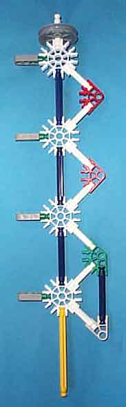

The actuator rods are analogous to the logic rods of the Digi-Comp I. It is the actuator rod which alters the states of the bits.
|  |
The picture shows an actuator rod from a three bit knex-i-comp. The two tined fork of the conrol actuator linkage rests on the gray pully and engages with the white strut at the top of the actuator rod. The red (arity 3) connectors and white struts provide sufficient stiffness so that the actuator rod doesn't flex during operation. The gray (arity one) connectors on the left combine with white struts vertically mounted on the bit frame to form hinges on which the actuator rod can swing. The blue struts, in addition to providing structure, will engage with yellow struts mounted on the programming hardware to alter the state of a bit assembly during phase 4 of operation. The light gray (arity 2) connector near the bottom of the assembly engages with the actuator driver during phase 4 of operation. The yellow strut at the bottom engages against the actuator back-block to hold the actuator rod off-normal during phases 2 and 3 of the operation cycle. |